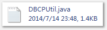
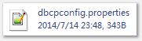
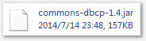
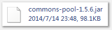
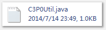
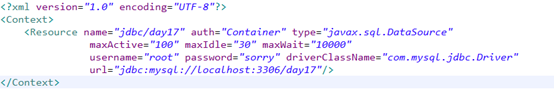

1.一个标准的数据库连接池要实现javax.sql.DataSource接口，按照字面意思，你的连接池一般称之为“数据源”对于已知类（不能修改他的源码）的某个/些方法，改变他的原有行为，解决方案：
2.a、继承（不建议使用）
2.a、继承（不建议使用）
b、装饰（包装）设计模式：IO（必须会）//包装心法1、编写一个类，实现与被包装类相同的接口（包装类和原有类有着相同的行为）2、定义一个变量，引用原有类的实例3、定义构造方法，把原有类的实例注入进来4、对于要改变的方法，编写自己的代码5、对于不需要改变的方法，调用原有类的对应方法。默认适配器c、动态代理：（AOP面向切面编程）基于接口的动态代理：Proxy被代理对象一定要实现了某个接口。基于子类的动态代理：CGLIB
b. 包装类基于IO的包装类，以下两个类实现。public class BufferedReaderTest {public static void main(String[] args) throws Exception {Reader in = new FileReader("src/com/itheima/base/BufferedReaderTest.java" );BufferedReader br = new BufferedReader(in);LineNumBufferedReader lbr = new LineNumBufferedReader(br);String data = null;while((data=lbr.readLine())!= null){System. out.println(data);}lbr.close();}}public class LineNumBufferedReader extends BufferedReader {private BufferedReader br; //原有对象private int num = 1;public LineNumBufferedReader(BufferedReader br){super(br);this. br = br;}public String readLine() throws IOException {String data = br.readLine();if(data== null)return null;return ( num++)+ ":"+data;}}c.动态代理c.1 基于接口的动态代理：被代理对象最少实现了一个接口。用Proxy.newProxyInstance(Classloader loader,Class<?>[] interfaces,InvocationHandler h);代码如下：public interface Human {void sing( float money);void dance( float money);void eat();}public class ArtistMan implements Human {public void sing( float money) {System. out.println( "收到：" +money +"开始唱歌" );}public void dance( float money) {System. out.println( "收到：" +money +"开始跳舞" );}public void eat() {System. out.println( "开始吃饭" );}}public class Boss {public static void main(String[] args) {final ArtistMan man = new ArtistMan();Human proxyMan = (Human) Proxy.newProxyInstance(man.getClass().getClassLoader(),man.getClass().getInterfaces(),new InvocationHandler() {public Object invoke(Object proxy, Method method, Object[] args)throws Throwable {if( "sing".equals(method.getName())){float money = (Float) args[0];return method.invoke(man, money/2);} else if( "dance".equals(method.getName())){float money = (Float) args[0];return method.invoke(man, money);} else{return method.invoke(man, args);}}});proxyMan.sing(200);proxyMan.dance(300);proxyMan.eat();}}代码如下：public class ArtistMan {public void sing( float money) {System. out.println( "收到：" +money +"开始唱歌" );}public void dance( float money) {System. out.println( "收到：" +money +"开始跳舞" );}public void eat() {System. out.println( "开始吃饭" );}}public class Boss2 extends ArtistMan {public static void main(String[] args) {final ArtistMan man = new ArtistMan();ArtistMan proxyMan = (ArtistMan) Enhancer.create(ArtistMan. class, new MethodInterceptor() {public Object intercept(Object proxy, Method method, Object[] args,MethodProxy arg3) throws Throwable {if( "sing".equals(method.getName())){float money = (Float) args[0];return method.invoke(man, money/2);} else if( "dance".equals(method.getName())){float money = (Float) args[0];return method.invoke(man, money);} else{return method.invoke(man, args);}}});proxyMan.sing(200);proxyMan.dance(300);proxyMan.eat();}}3.开元数据源的使用1、DBCPa、需要的jar：commons-dbcp.jar commons-pool.jarb、设置配置文件
c、编写一个工具类



2、C3P0
a、考jar包
b、写配置文件
c、编写一个工具类

3、JNDI(tomcat服务器)
一般服务器都是通过JNDI存放数据源的。数据源的配置。
3.1配置Tomcat管理的数据源
a、把数据库驱动拷贝Tomcat\lib目录中
b、在应用的META-INF目录下，建立一个名称为context.xml的配置文件，内容如下：

c、部署应用，启动Tomcat，服务器就会按照配置在JNDI容器中注册数据源的实例。
d、获取数据源
利用JNDI的API（JDK：javax.naming.*）把数据源根据path+name查询出来。


4.编写自己的JDBC框架，用到了策略模式。